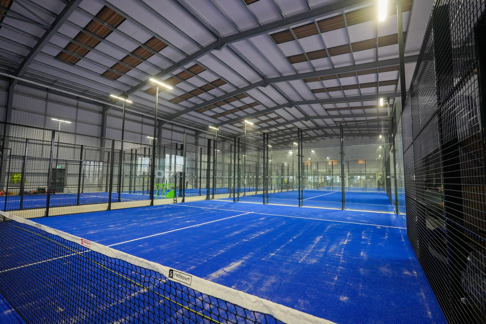
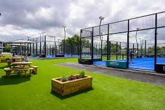
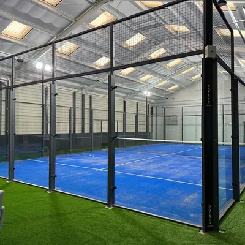

Consultar disponibilidad
Visualizá horarios libres y ocupados según la fecha y la cancha que elijas.
Consultá disponibilidad, reservá turnos, organizá partidos con otros jugadores y gestioná todas tus reservas desde un solo lugar.

La plataforma pensada para jugadores y clubes que quieren optimizar la gestión de turnos.
Visualizá horarios libres y ocupados según la fecha y la cancha que elijas.
Seleccioná un horario disponible y confirmá tu reserva de forma intuitiva.
Encontrá jugadores, unite a partidos abiertos o creá el tuyo propio.
Creá, modificá o cancelá tus turnos cuando lo necesites.
Recibí confirmaciones y recordatorios de tus reservas y partidos.
Registrá los resultados de tus partidos y seguí tu rendimiento.
Gestioná tus instalaciones y optimizá la ocupación de tus canchas desde un panel exclusivo.
Agregá, editá o eliminá las canchas de tu club con toda su información.
Elegí qué turnos están habilitados para reservas en cada una de tus canchas.
Visualizá en tiempo real qué turnos están libres u ocupados y quién reservó.
Algunas de las instalaciones disponibles para reservar hoy.

Neuquén Capital · Césped sintético · Iluminación LED

Cipolletti · Vista panorámica · Vestuarios incluidos

Plottier · Cancha premium · Estacionamiento